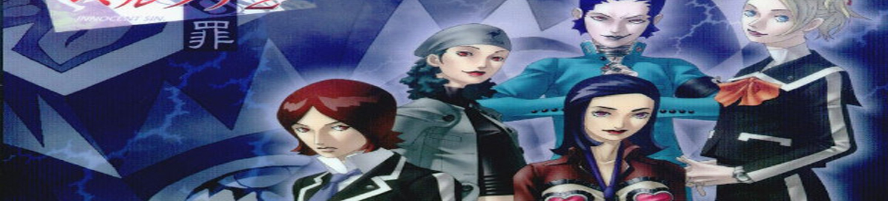
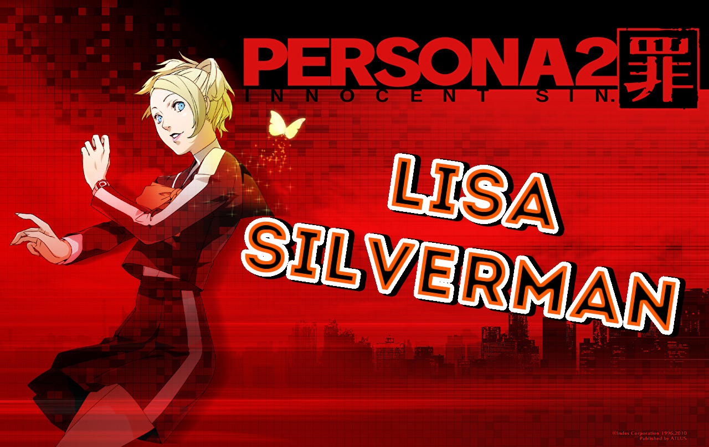

Persona 2: Innocent Sin, known as Persona 2: Sin in Japan, is the second game in the Persona series on the PlayStation. Innocent Sin is followed by Persona 2: Eternal Punishment, which together, create one overarching story.
Innocent Sin focuses on protagonist Tatsuya Suou dealing with rumors in his city coming true, due to the Joker. Along the way, Tatsuya and his friends must fight the Joker and figure out Joker's identity, as well as protect their city from the second coming of Hitler and his army of robot Nazis known as the Last Battalion.
The theme song of the game is Kimi no Tonari, by hitomi.
Gameplay of Persona 2: Innocent Sin
Persona 2: Innocent Sin begins three years after the events of the first Persona, in 1999. The location is Sumaru City, a large fictional metropolitan area set in modern day Japan. Sumaru City becomes cursed after events during the beginning of the game that cause any rumor that spreads enough to become true.
The silent protagonist of the game is Tatsuya Suou. Tatsuya is dragged into the plot by Lisa Silverman, a fellow student who idolizes Tatsuya, when conflict between Seven Sisters High School (Sevens) and Kasugayama High School (Cuss High) begins. The two come across Eikichi Mishina, the self-proclaimed boss of Cuss High. After getting into a fight, the three play a game summoning the Joker, a mysterious antagonist rumored to appear before anyone that calls him. Anyone who fails to tell Joker their wishes, either because they lack one or refuse to tell him, has their "ideal energy" stolen, reducing them to ambition-less shells called Shadow Selves. Once summoned, Joker claims that the three students had done something terrible to him in the past, and is angered when they do not recognize him. Swearing revenge and wielding an odd Crystal Skull, he departs, leaving the trio confused and eager to learn more about him. Later on they make a point of saying that Tatsuya and the Joker look alike.
Eventually, the three students are joined by Maya Amano and her friend, Yukino Mayuzumi, who returns from the first game and is already familiar with demons and capable of using her Persona. The five then search for Joker, the source of all rumors that spread becoming reality. Their search leads the group to clash with a cult-like following known as the Masked Circle. It is later revealed that the original Masked Circle was the group of friends including Tatsuya, Maya, Lisa, Eikichi, and Jun when they were all kids. After debunking numerous rumors and defeating several members of the Masked Circle, the group meets with Joker, who then reveals himself to be Jun Kurosu, the fifth childhood friend and member of the original Masked Circle. Eventually, the widely spread rumor that the Fuhrer had survived World War II with his secret forces, the Last Battalion, surfaces and his forces invade Sumaru City. Tatsuya and the others fight off both remaining Masked Circle members and the Last Battalion soldiers to obtain the crystal skulls, defeating their own Shadows in the process.
Towards the end of Innocent Sin, Tatsuya and the others board an alien spaceship known as the Xibalba, another rumor that had spawned into reality. In the deepest parts of Xibalba, the group finds the Fuhrer, wielding the Spear of Destiny (the spear that pierced Jesus Christ that is said to leave a mortal wound the second it strikes flesh) and defeats him.
At the conclusion of the game, it is revealed that all of the events had been orchestrated by Nyarlathotep in an attempt to show that the negatives of humanity would outshine the positives, contrary to Philemon's beliefs. Nyarlathotep then takes his true form and fights Tatsuya and the others. After the fight, Nyralathotep manipulates Maya Okamura into striking Maya Amano with the Spear of Destiny, killing her quickly. With the prophecy fulfilled, the Earth's rotation suddenly stops, destroying everything on the surface of the planet, save for Sumaru City. Philemon tells Tatsuya that there is a way to prevent Maya's death and stop Nyralathotep from destroying the world. Tatsuya agrees to create a new timeline in which Nyarlathotep is not successful, in exchange for everyone's memories.
Tatsuya Suou is the primary protagonist of Persona 2: Innocent Sin. Following the tradition of Shin Megami Tensei series, he is a silent protagonist, and some aspects of his personality, including his sexual orientation, are determined by the player's in-game actions and decisions. The most salient event regarding his sexuality occurs after the Shadow Lisa fight, where the player may choose to express feelings for one of his party members. If the player selects Jun Kurosu, then Tatsuya and Jun are treated as lovers. He has a more established history and personality than most other silent protagonists in the franchise, due in no small part to his ability to speak in Eternal Punishment.
A distinct character tic of his present in both Innocent Sin and Eternal Punishment is his habit of flicking the engraved Zippo lighter Jun gifted to him as a child open and closed. He's also an avid motorcycle enthusiast, and owns a bike of his own in both continuities. Because he is often seen performing maintenance work on his bike and works part time as a mechanic, rumors from Seven Sisters eventually give him the ability to flawlessly pilot any vehicle in Innocent Sin, which he carries over to Eternal Punishment as the Tatsuya from the "Other Side;" the Tatsuya of “This Side," however, has no such ability.
In Innocent Sin, although he seemingly projects the image of the quintessential aloof “bad boy” and is exceptionally popular among his peers because of it, Tatsuya is an awkward, somewhat-shy loner who tends to alienate those around him, and is strongly uncomfortable around people who pursue him persistently, either romantically, like Lisa Silverman, or as an acquaintance, like Eikichi Mishina, as a result of the Alaya Shrine incident. His relationship with his family is strained; he’s envious of and hostile towards his successful older brother, Katsuya, despite Katsuya’s best efforts to care for him, ashamed of his disgraced ex-police officer father whom he considers a coward, and disappointed in his mother for remaining passive when his father was discharged from his capacity as a police officer on false accusations.
-Voice of Keith Silverstein
She is famous for her rather unwavering and relentless optimism, something which begins to break down in Eternal Punishment. Maya Amano is a cheerful and compassionate woman, and works as a reporter for the teen magazine Coolest. Maya is also known for her motto, "Let's think positive!"
Maya often takes the role of a leader in the group, even in Persona 2: Innocent Sin where she is not the protagonist. Her unstoppable optimism and kindheartedness inspired and encouraged the group throughout the events of the game, making her an unforgettable force within the world they inhabited. Maya also often cheers the party up with her stuffed rabbit doll, which she calls "Mr. Bunbun." This doll evokes memories of her father.
Maya functions as the silent protagonist in Persona 2: Eternal Punishment but still retains components of her Innocent Sin personality.
-Voice of Dorothy Fahn | Lani Minella (Eternal Punishment)

A martial arts fanatic and a fan of Bruce Lee, Lisa uses her own fists to defend herself, equipping gloves to improve the force impact.
She is one of the more popular girls at Seven Sisters High School, and is the self-proclaimed hottest girl in school. She harbors a crush for Tatsuya Suou because she thinks he is hot enough to boost her self-esteem. She holds an obvious crush on Tatsuya, acting clingy towards him and follows him around with little regard to his feelings on the matter.
Despite her appearance, Lisa usually acts cool to those she is not interested in, and even haughty to those she dislikes. This could be caused by the bullying and xenophobia she experienced from the other local children when she was very young.
Despite her natural blonde hair and blue eyes, she is unable to speak English (the misconception that she can is the cause of much confusion and annoys her). Lisa's parents never taught her English for unknown reasons, apparently not understanding its significance and importance as a lingua franca (common language), and she resents herself because of it and is reluctant to admit it. Although Lisa tries to learn English, it comes out in the form of heavy Engrish, and Lisa is concerned she will never be able to perfect it.
Eikichi is flirtatious, self-centered and completely narcissistic. His self-indulgence particularly annoys Lisa Silverman and is referred to in several Contacts. He tends to take what people say too personally and is easily swayed.
Despite his apparent narcissism, he actually has low self-esteem, and acts the way he does to hide it. At home, Eikichi acts completely differently, wearing traditional Japanese clothes and acting respectful.
Eikichi is incredibly devoted to his friends and will do anything to help them, and he blames himself if anything happens to them. He cries and blames himself when his friends turn into Shadowmen, and is heartbroken when they disappear for good. When Lisa is depressed, he tells her he is there for her and does his best to cheer her up.
Eikichi Mishina is the infamous "Death Boss" of Kasugayama High School, the boys' school for juvenile delinquents. He's called that partially from his reputation as a badass, and partially because he's a Persona user. He didn't know there were any other Persona users, or even what a Persona was, so he assumed that he was unique and could summon a Shinigami to help him fight. He claims to protect the weak from bullying in Kasugayama High, and is both feared and respected at both schools.
-Voice of Troy Baker
Yukino is Maya's photographer and partner at "Coolest" magazine. Yukino is currently the apprentice of Shunsuke Fujii, a seasoned photographer who acts as her mentor. She is investigating the Joker incident with her partner, Maya Amano.
Tatsuya's group first meets with Maya and Yukino in the principal's office at Seven Sisters High School. After discovering that Tatsuya's group knows about the rumors, the two join their party and chase after Joker with them. While at Club Zodiac, Yukino meets Anna Yoshizaka and is concerned that she has dropped out. After receiving King Leo's enigmatic hint of the next bombing target from the Aoba Park concert hall, Yukino contacts her alumnus as well as an occult expert, Eriko Kirishima, for help.
There will be two different outcomes of her fate at Caracol; if the player lets her stay with Fujii after his death, Shadow Yukino will appear in the central bridge of Caracol with Anna and the couple defeats three units of Order of the Holy Lance. Anna at this points is seemingly brainwashed by Shadow Yukino and encouraged to live an irresponsible life when Tatsuya's group approaches. After the two are defeated, Shadow Yukino curses Tatsuya for making the wrong choice and leaps the edge of the bridge with Anna to the abyss of unconsciousness and their own deaths. The real Yukino's ego is taken into the abyss as well by Nyarlathotep and will not respond to anything. Philemon then informs the team that Yukino has made a wish to transfer her Persona ability to Jun Kurosu, an ability he lost when he ceased to be Joker.
If the player encourages Yukino to move on after facing Fujii's death, Philemon will grant her her ultimate Persona, Durga. Instead of fighting Shadow Yukino and Anna, the player will defeat three units of Order of the Holy Lance to save Anna. Even after Shadow Yukino shows up, Yukino bravely confronts the shadow and tells the team to leave first to Kurosu's rescue. Yukino will later return with Anna and rejoin the group for one last fight against Angel Joker. After this battle, she voluntarily sacrifices her ability to use a Persona to allow Jun to wield a Persona. She is last seen heading off into the city with Anna to find the Last Battalion.
Jun's character is defined by his ambiguity. On the outside, he is asocial, introverted, calculating and actively uses his beauty to manipulate other people. On the inside, however, Jun is rather warm, caring, highly protective of his friends and wants to fulfill the dreams and wishes of humanity, even if his means of achieving this goal are questionable. Additionally, he is afraid of being marginalized by the society he's working to please. During the Aquarius Temple, he discusses the meaning of the sign and dismisses the idea of him having any of the positive traits, but the rest of the team assure him he's wrong. Hobby-wise, Jun understands flower language (花言葉, hanakotoba) and likes astrology. He is also highly intelligent and philosophical; he has a patent for an orthopedic shoe, loves inventing and excels at math and physics. However, due to his antisocial nature, he doesn't like group sports and instead prefers walking.
Jun is heavily implied to be gay, and his present romantic feelings for Tatsuya are suggested to have extended back to their childhood; he's flustered at Maya's insistence that the two of them are alike, and is generally very happy to be likened to Tatsuya. As teenagers, Jun asks Tatsuya out to dinner, assures Tatsuya that he will never leave his side and is considered a serious competitor alongside Lisa for Tatsuya's affections. The player may have Tatsuya choose to confess feelings for Jun, in which case Tatsuya and Jun will be treated as lovers. Jun is also repeatedly stated to have no attraction to women, as evidenced by in-game demon contacts and the Persona 2: Innocent Sin World Book, which mentions female pursuers are better off staying friends. Kazuma Kaneko and Satomi Tadashi in an interview in the Persona World Guidance book talked about the relationship between him and Tatsuya.